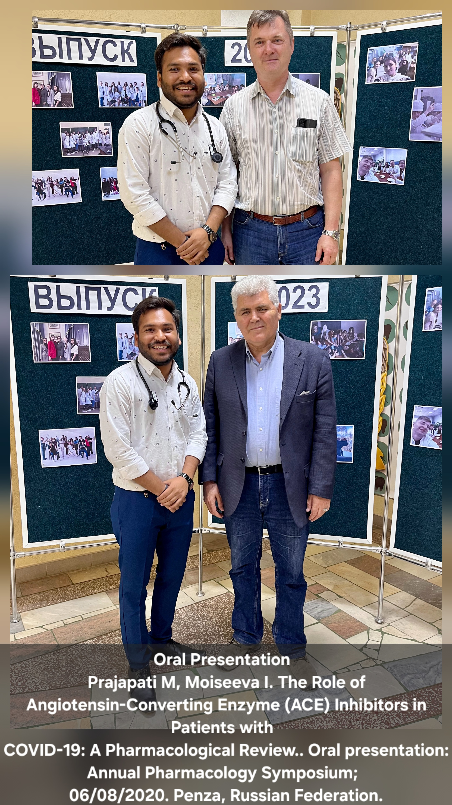
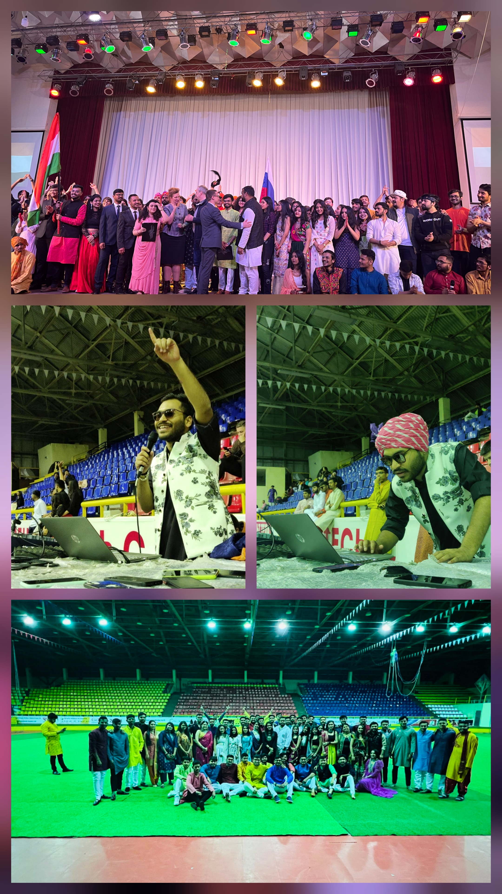
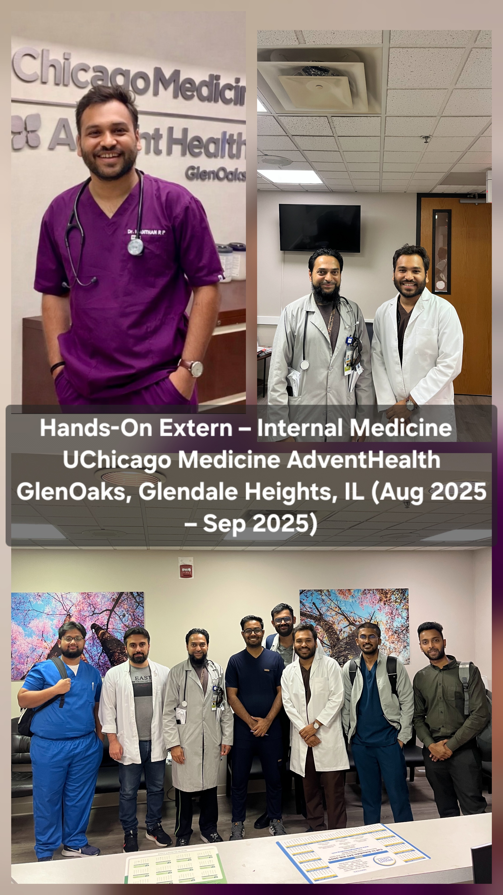
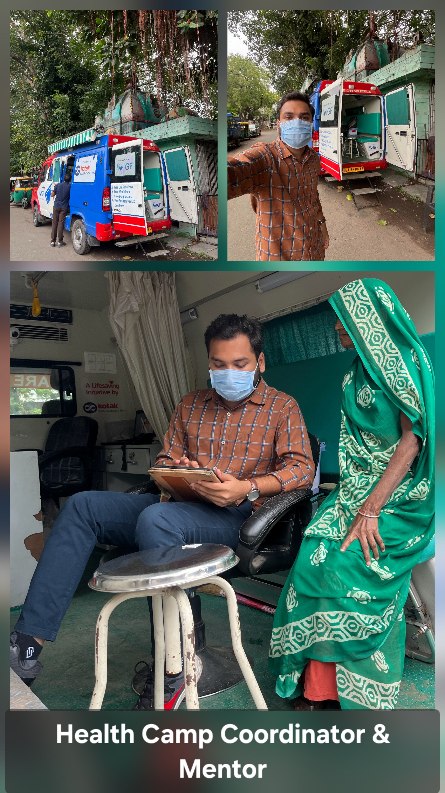
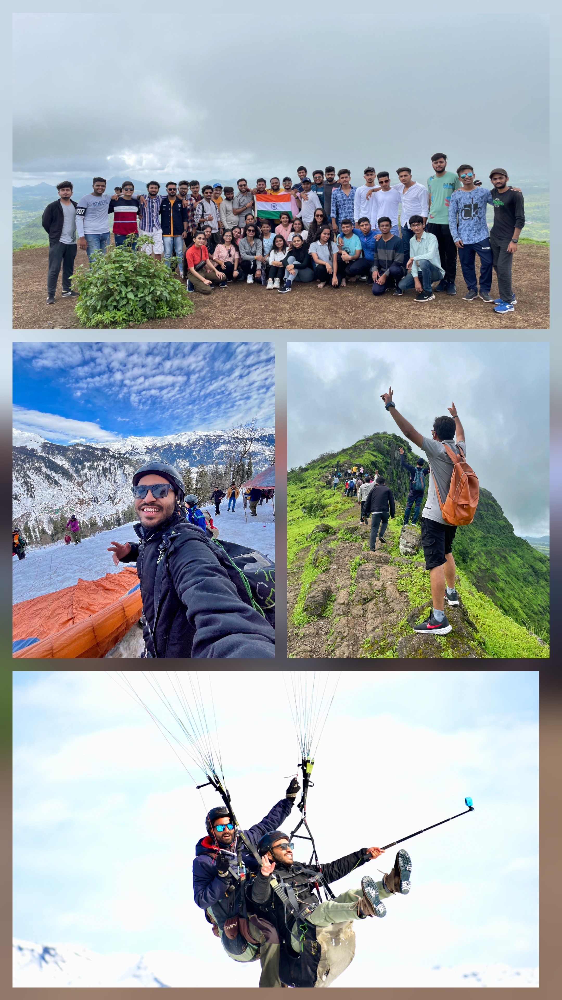
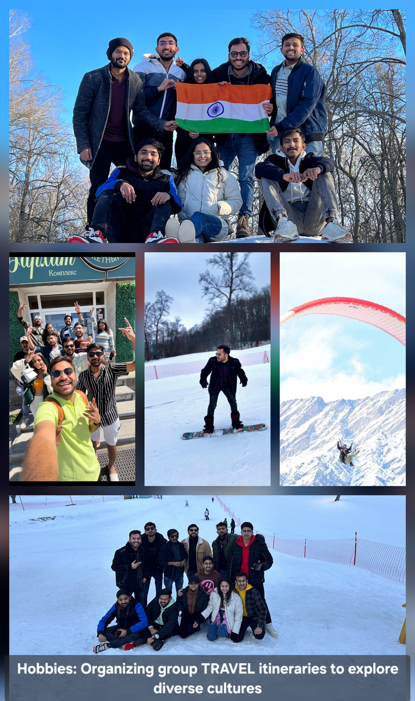

Internal Medicine Applicant | ECFMG Certified | USMLE Step 2 CK: 239
MD (Doctor of Medicine)
Penza State University, Russia (2017-2023)
ECFMG Certified (2025)
Unrestricted License: Gujarat Medical Council
Glendale Heights, IL | Internal Medicine Rotation
Managed complex comorbidities like cardio-renal syndrome. Synthesized consultant notes to adjust management plans via EPIC EMR.
Chicago, IL | Primary Care Rotation
Performed focused physical exams and obtained comprehensive histories for diverse outpatient populations.
Key Achievement: Single-day census of 182 patients in rural OPD clinics.
Orchestrated logistics for monthly rural health camps in Gujarat, serving over 500 women and children per session. Mentored junior students on empathetic patient communication.
Role of PDE-5 Inhibitors in Reactive Pulmonary Vasculopathy (Sept 2025). Published & Cited in PubMed.
Oral presentation on ACE Inhibitors in COVID-19 patients (Penza, 2020).





